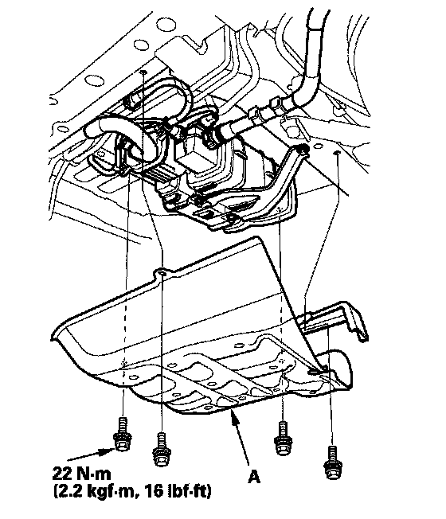
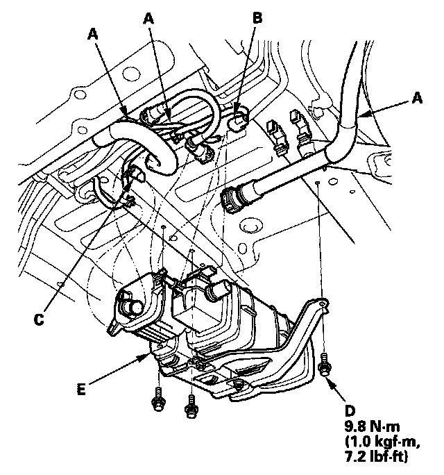
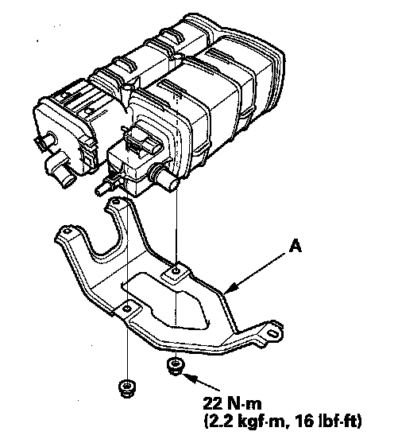

Evaporative Emission Control Canister: Service and Repair
EVAP Canister Replacement
1. Remove the fuel tank guard (A).

2. Remove the hoses (A), the FTP sensor 3P connector (B), and the EVAP canister vent shut valve 2P connector (C).
3. Remove the bolts (D).
4. Remove the EVAP canister assembly (E).

5. Remove the EVAP canister bracket (A).
6. Install the parts in the reverse order of removal.